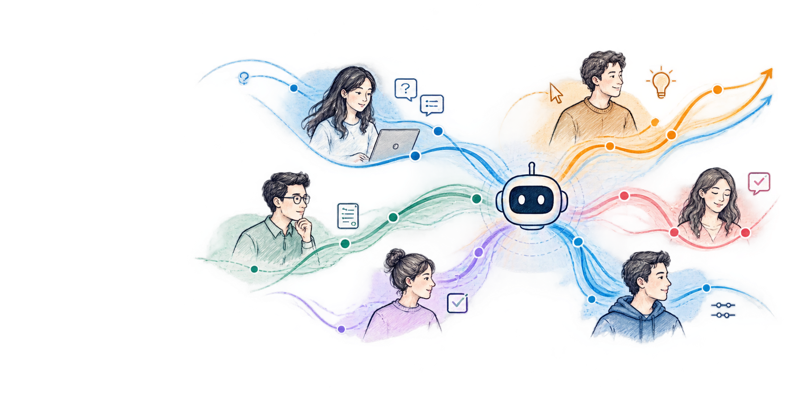

01
Learning from sparse and evolving user evidence
How should agents learn from demonstrations, edits, corrections, approvals, interruptions, takeovers, and natural-language feedback without overreacting to isolated signals?
How should an AI agent learn to work with this particular user?
The 1st Workshop on User-Specific Interaction Learning (USIL) — learning when to ask, infer, act, defer, seek confirmation, explain, and return control from feedback over time.

USIL studies how AI agents learn from user-specific evidence to adapt communication, elicitation, collaboration, and autonomy over time.
As AI systems become persistent agents that plan, use tools, and act on users’ behalf, the interaction itself becomes part of the learning problem. Different users may want different levels of explanation, initiative, confirmation, delegation, or control — even when the underlying task is identical.
USIL brings together personalized agents, user modeling, memory, preference learning, continual adaptation, human–AI interaction, and interactive agents around one downstream object: the user-specific interaction policy.
How should evidence about one person be retained, represented, generalized, and translated into concrete interaction decisions?
A shared agenda for learning how accumulated user-specific evidence should shape interaction decisions across contexts and over time.
How should agents learn from demonstrations, edits, corrections, approvals, interruptions, takeovers, and natural-language feedback without overreacting to isolated signals?
What should an agent represent about a user, and what should transfer across tasks, tools, domains, and agent backends?
How should user-specific preferences for oversight and autonomy change decisions about clarification, confirmation, delegation, and control?
How should we evaluate whether an agent behaved appropriately for a particular user rather than only for an aggregate user?
The invited program spans personalization, reinforcement learning, human-centered AI, social reasoning, safe autonomy, and interactive agents.
Seven invited talks, contributed spotlights and posters, a moderated panel, and a structured community session on open problems.
| Time | Session |
|---|---|
| 08:45–09:00 | Welcome and opening remarks |
| Session I · Learning and Representing the User | |
| 09:00–10:15 | Invited talks · Jennifer Neville, Hongseok Namkoong, Emma Brunskill |
| 10:15–10:45 | Contributed Spotlight Talks I |
| 10:45–11:15 | Coffee break |
| Session II · Human-Centered Interaction and User Inference | |
| 11:15–12:05 | Invited talks · Noah Goodman, Diyi Yang |
| 12:05–13:00 | Poster session |
| 13:00–14:00 | Lunch break |
| Session III · Personalized and Adaptive Agents | |
| 14:00–14:50 | Invited talks · Lina Yao, Liwei Jiang |
| 14:50–15:20 | Contributed Spotlight Talks II |
| 15:20–15:50 | Coffee break |
| 15:50–16:50 | Panel · What should an agent learn about you, and how should it change its behavior? |
| 16:50–17:30 | Community session · Open problems in User-Specific Interaction Learning |
| 17:30–17:45 | Closing remarks and next steps |
We welcome empirical, methodological, theoretical, benchmark, position, negative-result, re-analysis, and early-stage work on how AI agents learn to interact with individual users.
Contact: yanqi.luo1@gmail.com